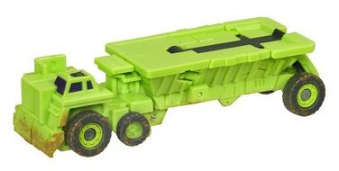 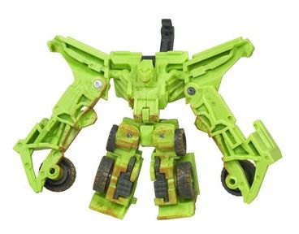
Size : Legend
Difficulty of Transformation : Very Easy
Color Scheme : Light lime green, dark gray, and some dark purple, light red, and light muddy brown
Individual Rating : 7.9
Allegiances
: Decepticons
Price
: $30 (U.S.)
Overall Rating
: 6.4
(NOTE: Because this set is a repaint, this
is not a full-blown review. This mainly covers any changes made to the
set's molds and their color schemes, and merely compares them to the RotF
Legends class Constructicons. For a review on the toys themselves, read
the review of the RotF Legends class Constructicons
here
.)
 Decepticon
Overload
Decepticon
Overload
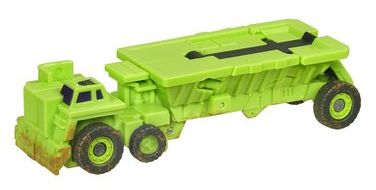
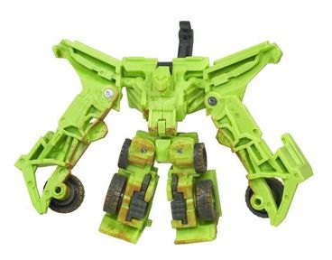
Size
: Legend
Difficulty of Transformation
: Very
Easy
Color Scheme
: Light lime green,
dark gray, and some dark purple, light red, and light muddy brown
Individual Rating
: 7.9
 Hightower
Hightower
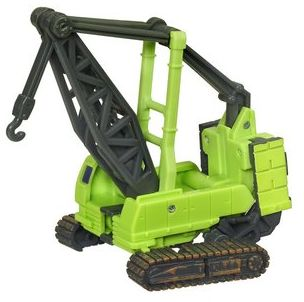
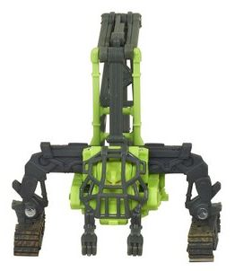
Size
: Legend
Difficulty of Transformation
: Very
Easy
Color Scheme
: Light lime green,
dark gray, and some dark purple, light red, and light muddy brown
Individual Rating
: 5.3
 Long
Haul
Long
Haul
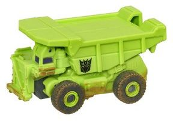
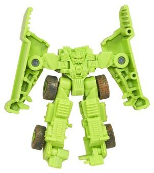
Size
: Legend
Difficulty of Transformation
: Very
Easy
Color Scheme
: Light lime green and
some dark gray, dark purple, light red, and light muddy brown
Individual Rating
: 7.6
 Mixmaster
Mixmaster
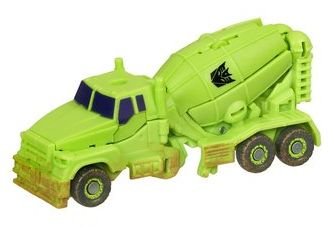
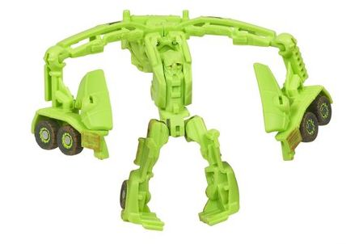
Size
: Legend
Difficulty of Transformation
: Very
Easy
Color Scheme
: Light lime green and
some dark gray, dark purple, light red, and light muddy brown
Individual Rating
: 4.4
 Rampage
Rampage
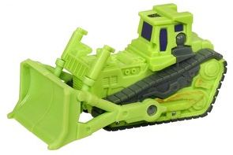
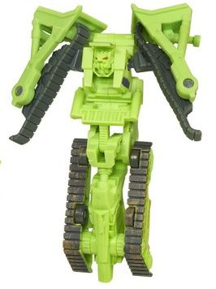
Size
: Legend
Difficulty of Transformation
: Very
Easy
Color Scheme
: Light lime green,
dark gray, and some dark purple, light red, and light muddy brown
Individual Rating
: 4.9
 Scavenger
Scavenger
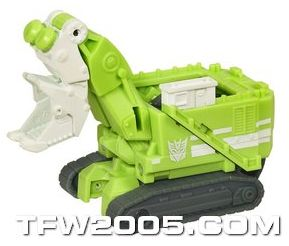
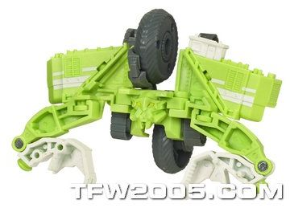
Size
: Legend
Difficulty of Transformation
: Very
Easy
Color Scheme
: Light lime green,
dark gray, chalky off-white, and some light red
Individual Rating
: 6.1
 Scrapper
Scrapper
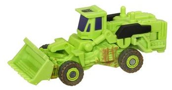
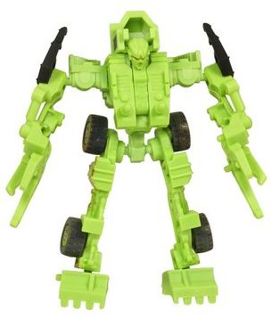
Size
: Legend
Difficulty of Transformation
: Very
Easy
Color Scheme
: Light lime green and
some dark gray, dark purple, light red, and light muddy brown
Individual Rating
: 8.2
 Constructicon
Devastator (Gestalt Form)
Constructicon
Devastator (Gestalt Form)
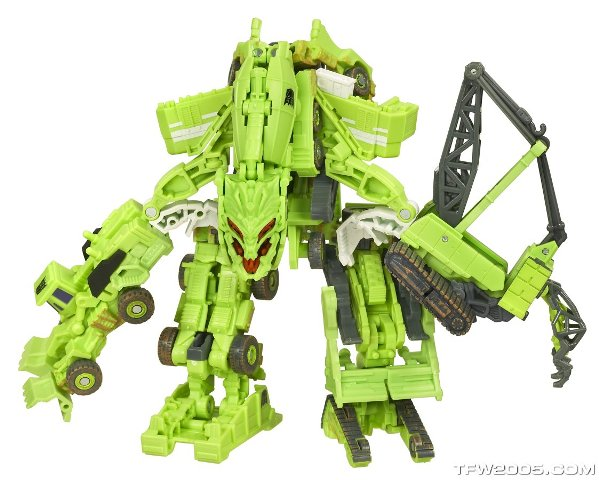
Difficulty of Transformation
: Hard
Individual Rating
: 6.8
Considering that all
of the Constructicons' colors are so similar in this version, I felt it
more efficient to review them all together, instead of just repeating roughly
the same comments on every one. Just like G1, this redeco of the RotF Legends
Constructicons incorporates a light lime green as the main color, with
dark gray being the main secondary color on most of the 'Cons. The dark
gray serves as a decent darker color to offset the green... but there's
barely any of the purple also used in the G1 color scheme, which is really
unfortunate as it not only looked GREAT against the green, but also made
them look considerably more visually appealing. With the purple only being
used on the windows, it really isn't "present" enough to serve as a main
or secondary color here. There's a bit of brown "dirt" paint wash on most
of the Constructicons, but it's fairly minimal and although it doesn't
outright clash, it also doesn't lend much to the color scheme. On a call-out
to a more specific figure, Scavenger in this set still has his white paint
apps, which really needed to go for this version, given how light the shade
of green plastic behind them already is. They're both bright colors, and
thus don't contrast well enough. I will say that the red used for the optics
of the various robots-- as little as it
is
used-- looks very nice
against the green.
No mold changes have
been made to Autobot Alliance "G1 Colors" Constructicon Devastator.
The idea behind a "G1
colored" Legends Devastator set was a good one, given how it would make
the combined mode look more cohesive and not so obviously a mish-mash of
different 'bots, but in practice it falls flat, mainly due to the lack
of any substantial amount of purple to offset all that light green. Instead,
he ends up rather blah and boring-looking. Some of the individual 'Cons
look
slightly
better, but overall I'd definitely recommend the original
release of this gifset instead, although the original is a fair bit harder
to get.
Reviews by Beastbot
(Note: All pictures in this review are taken from Hasbro , via TFW2005 .)